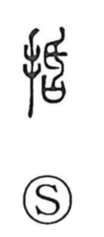

括

Uncategorized
Kun: kukuru | On: katsu
to tie up ・ to bind ・ to bundle ・ to sum up
Explanation
A phono-semantic character: the hand element signals a manual act, while the phonetic component belongs to the katsu group seen in graphs such as 刮 and in the form explained under 昏, where a small handled knife pierces a ritual “sai,” the vessel that held petitions to the gods, thereby cutting off their efficacy. From this image of cutting or effacing, 括 turns to the concrete deed performed by the hand: gathering what has been cut and tying it together into a single bundle. Hence its senses of binding, bundling, and by extension bringing things together as one—summarizing or including.